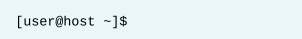

第二章 访问命令行
目标：
- 登录Linux系统并使用shell运行简单命令。
章节：
- 访问命令行
- 使用桌面访问命令行
- 使用Bash Shell执行命令
第一节：访问命令行
目标：
- 完成本节后，学生应该能登录Linux系统并使用shell运行简单命令。
Bash Shell简介：
- command line（命令行）基于文本界面，用于向计算机输入指令。
- Linux命令行由shell程序提供，红帽使用GNU Bourne-Again Shell（bash）。
- Bash是Bourne Shell（sh）的改进版本。
* 其他shell程序：ksh（AIX）、zsh、csh
* /etc/shells中定义系统默认支持的shell程序类型
- bash在提示符后等待用户输入命令，普通用户提示符是 $，超级用户root的提示符是 #。


- bash shell带有脚本语言，支持自动化任务，且可以完成图形化难以完成的高效任务。
- bash与Windows中的cmd.exe和PowerShell类似，macOS默认使用bash。
Shell基础知识：
- shell命令的三个组成部分：命令（command）+ 选项（options）+ 参数（arguments）
- 命令是程序名，其后可以跟随选项，选项跟一个或两个破折号（如，-a或--all）。
- 选项或命令后可以跟随参数，通常指向目标参数。
- $ usermod -L user01：锁定user01用户的密码
登录到本地计算机：
- 计算机的硬件键盘和显示器用于输入和输出，称为物理控制台（physical console）。
- 物理控制台带有多个虚拟控制台（virtual console），可以运行单独的终端（terminal）。
- 需要在终端中登录计算机才能运行shell。
- 终端基于文本界面，用于输入命令及显示输出。
- Ctrl+Alt+F1~F6可以进行虚拟控制台的切换（tty1~tty6）。
- 在RHEL 8中，如有图形化环境，将在tty1（第一个虚拟控制台）中运行。
- tty2~tty6中为文本登录提示符。
- 数据中心可能会有许多无外设服务器（headless server）机架，而不为每一服务器配备键盘和
显示器，这样可节省空间和费用。
- 一般情况下，使用网络访问无外设服务器。
- 如果服务器自身的网卡配置有误且无法通过本身的网络连接登录，则通常会使用串行控制台
（serial console）来修复服务器。
* 可通过RJ45转RS232串口连接无外设服务器：以下两种接法均是（第二种方式早期使用）


通过网络登录：
- Linux管理员通常需通过网络连接到远程系统来获得shell访问权限。
- 对于虚拟机或云上的实例，通常没有物理控制台和串行控制台。
- 在Linux中，获取远程系统上shell提示符的最常用方法是使用Secure Shell（SSH）。
- 大多数Linux及macOS使用OpenSSH软件提供ssh功能。
- ssh命令通过加密连接来防止通信被窃听或篡改。

- 一些系统为了增强安全性，不允许使用密码进行登录，而需要使用公钥身份验证登录，
当公钥与私钥匹配，则不需要输入密码就能登录（后续章节将详细介绍）。

- 上图中mylab.pem为host主机user用户的私钥，需要以600权限防止普通用户读取，且
remotehost主机的remoteuser用户需要提前认可并拥有host主机user用户的公钥。
* 注意：
1. 第一次登录新计算机时，系统会从ssh向您发出警告，表示它无法确定主机的真实性：

2. 每次通过ssh登录远程主机时，远程主机会向ssh发送其主机公钥（host key）来进行
身份验证，以帮助设置加密通信。
3. ssh命令将该公钥与保存的主机公钥列表进行对比，以确保它没有更改。
4. 如果主机公钥已更改，则可能表示有人在尝试伪装成该主机以劫持连接，这也称为中间人攻击
（man-in-the-middle attack）。
5. 在SSH中，主机公钥可以防止中间人攻击，这些主机公钥对于各服务器具有唯一性，而且
需要定期或每当怀疑遭泄露时进行更改。
6. 如果本地计算机没有为远程主机保存主机公钥，将会收到如上警告。
7. 如果输入yes，远程主机发送的主机公钥会被接受，并且保存下来供日后参考。
8. 登录将继续，连接此主机时应该不会再看到此消息。
9. 如果输入no ，主机公钥将被拒绝，连接将关闭。
10. 如果本地计算机确实保存了主机公钥，并且与远程主机实际发送的主机公钥不匹配，则会
自动关闭连接并显示警告。
注销：
- 使用完shell并想退出时，可以输入exit命令或Ctrl+D命令退出。

练习 P19：ACCESSING THE COMMAND LINE
第二节：使用桌面访问命令行
目标：
- 完成本节后，学生应该能使用GNOME 3桌面环境登录Linux系统，从终端程序shell提示符中运行命令。
GNOME桌面环境简介：
- RHEL 8使用GNOME 3提供图形化的桌面环境，基于Wayland（默认）或传统X Windows System图形框架。
- GNOME Shell为GNOME桌面环境提供核心用户界面功能。
- RHEL 8使用Standard主题，RHEL 7使用Classic主题，各个主题在登录时的“Sign In”按钮旁的齿轮
图标中选择。

GNOME Shell组成部分：
- GNOME Shell的组成元素包含以下部分：

1. Top bar：顶栏，带有Activities按钮及音量、联网、日历和输入法选择控件。
2. Activities overview：活动概览，点击Activities按钮或Super键（又名Windows或Command键），
包含Dash、Windows overview、Workspace selector三个区域。
3. Dash：仪表板，是可配置的图标列表，包含用户收藏的应用、当前正在运行的应用，还可用于选择
任意应用。
4. Windows overview：窗口概览，用于显示当前工作区中所有活动窗口的缩略图。
5. Workspace selector：工作区选择器，显示并切换所有活动工作区。
6. Message tray：消息托盘，查看应用或系统组件向GNOME发送的通知。
启动终端：
- GNOME桌面环境中启动GNOME Shell的两种方式：
1. Activities -> Dash -> Terminal
2. Alt+F2，在Enter a Command窗口中输入gnome-terminal。
- shell提示符和terminal标题栏将显示：用户名、主机名和工作目录。
锁定屏幕或注销：
- Top bar最右端的系统菜单可以执行锁定屏幕或注销
- Super+L（Windows+L）锁定屏幕更加快捷
- 图形会话闲置几分钟后，屏幕也会锁定。
- Enter键或空格键或直接输入密码以解锁
关机或重启系统：
- Top bar最右端的系统菜单中电源按钮关机
- Ctrl+Alt+Del选择Power Off或Restart
- 关机命令：poweroff、init 0
- 重启系统：reboot、init 6
* GNOME帮助文档查看：
$ yelp
$ gnome-help
练习 P27：ACCESSING THE COMMAND LINE USING THE DESKTOP
第三节：使用Bash Shell执行命令
目标：
- 完成本节后，学生应该能使用Bash快捷键节省运行命令的时间。
基本命令语法：
- bash解读用户的指令，指令包含命令、选项（通常以 - 或 -- 开头）与参数三部分，
中间以空格分隔。
- Enter键执行，屏幕上显示指令输出，并显示下一个shell提示符。

- 在一行中可以输入多个指令，中间以分号（;）分隔。
注意：分号（semicolon）在bash中是元字符（metacharacters）中的一种。

简单命令示例：
- $ date：显示或设置Linux系统时间，+表示参数设置格式。

$ date -s "2019-12-18 08:16:30"：更改Linux系统日期与时间
$ date -u：查看Linux系统UTC时间

$ hwclock：查看计算机主板BIOS时间（硬件时间），该时间存储于主板的可读写RAM芯片（CMOS）中。
$ hwclock -w：将Linux系统时间同步至BIOS时间
$ hwclock -s：将BIOS时间同步至Linux系统时间
* 注意：
1. CMOS存储BIOS的所有设置信息，因此BIOS设置有时也称为CMOS设置。
2. 这里说的是系统时间，由Linux操作系统维护。
3. 在系统启动时，Linux操作系统将时间从CMOS中读到系统时间变量中，以后修改时间通过修改系统时间实现。
4. 为了保持系统时间与CMOS时间的一致性，Linux每隔一段时间会将系统时间写入CMOS。
5. 由于该同步是每隔一段时间（大约是11分钟）进行的，在执行date -s命令后，如果马上重起机器，
修改时间就有可能没有被写入CMOS。
6. 如果要确保修改生效可以执行命令：hwclock -w
- $ passwd：更改用户密码

1. 用户可更改自身的密码，但原始密码必须指定。
2. 默认情况下，passwd命令要求强密码。
3. 强密码由大写字母、小写字母、字符与数字组成，并且密码不为Linux字典（/usr/share/dict/linux.words）
中的单词。
- $ file：扫描文件开头内容，显示文件类型。

查看文件内容：
- $ cat：查看一个或多个文件内容，还可将文件重定向到新文件。

- $ less：一次显示一页内容，可向前或向后滚动查看。
- $ head与tail：默认显示文件首或尾10行，可使用-n选项指定显示的行数。

- $ wc：计算文件中的行数、单词数与字符数，可分别使用-l、-w与-c选项。

TAB补全：
- Tab可以快速补齐命令或文件名
- 如果键入的字符不唯一，按Tab键两次可显示以键入的字符为开头的所有命令。


- 使用Tab键补全命令选项

在另一行上继续长命令：
- 如果命令太长，为提高可读性，可将命令分多行显示。
- 可以使用反斜杠字符（backslash，\）将Enter换行符转义（而不是命令结束），shell将显示
延续提示符（>）来确认请求。

命令历史记录：
- history：显示之前执行命令的列表，带有编号。
- !string：执行最近的一个字符串开头命令
- !number：执行指定编号的命令
- !!：执行上一条命令
- 键盘中上下箭头也可以在历史命令中浏览
- Alt + .：可以在当前命令中插入上一条命令的最后一个单词
* 注意：
1. bash中默认命令历史可达1000个，由/etc/profile中的HISTSIZE环境变量指定。
2. 用户的命令历史保存在家目录中的~/.bash_history文件中。
3. 该文件记录的是上一次登录以前所执行过的命令，而本次登录的命令暂时存储在内存中，
登出注销成功后将写入该文件中。

4. history命令相关的环境变量：

编辑命令行：
- bash的其他快捷方式：

练习 P35：EXECUTING COMMANDS USING THE BASH SHELL
Lab P39：ACCESSING THE COMMAND LINE